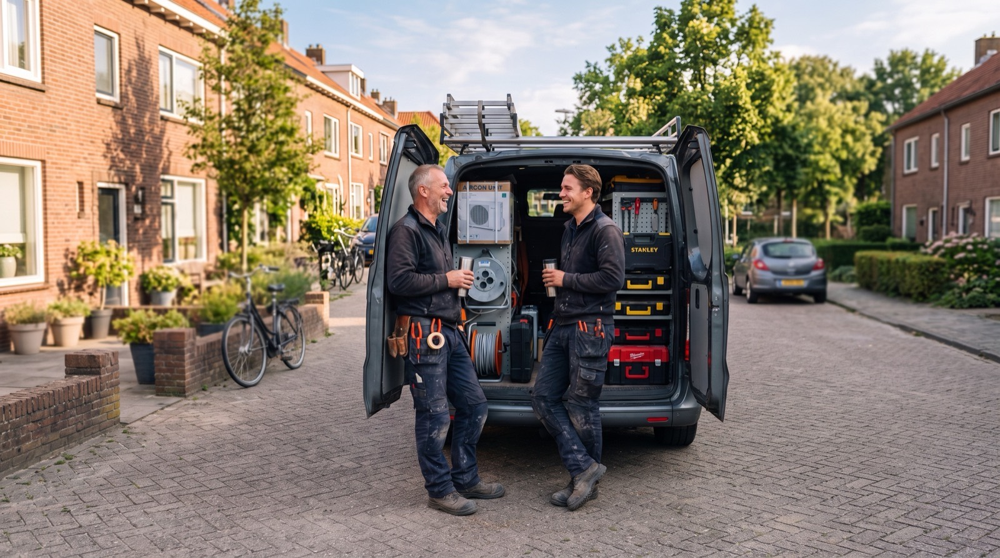

Installateurs
Leg riolering, vloerverwarming, ventilatie en inregelwaarden per woning vast. Aantoonbaar goed, ook jaren later.
BuildProof: de bouwplaats-app voor Wkb-bewijs
Je monteurs leggen foto's, meerwerk en inregelwaarden vast op het moment dat het werk gebeurt, direct bij het juiste project en kavel. Jij hebt bij de oplevering een compleet dossier, zonder een dag te zoeken.

Voordelen
Sinds de Wkb moet jij kunnen laten zien dat je werk klopt, ook als het al jaren achter een wand zit. Met foto's per kavel en onderdeel heb je dat bewijs altijd bij de hand.
Geen camerarollen, WhatsApp-groepen of mailtjes meer doorzoeken. Wat je team vastlegt, staat direct op de goede plek en is vanaf kantoor terug te vinden.
Foto's, meerwerk, inregelrapporten en leverbonnen komen per woning samen. Je ziet ruim op tijd wat nog ontbreekt en levert op met een compleet dossier.
Project
Nieuwbouw De Weide
Kavel 14 · Installatie
Functies
Je monteur kiest waar hij staat en maakt de foto. BuildProof zet hem direct op de juiste plek. Stel fotodoelen in per onderdeel, dan zie je meteen wat nog ontbreekt.
Warmtepomp · 2 van 3 foto's1 ontbreekt
Extra werk of iets dat afwijkt van de tekening? Leg het vast met foto en omschrijving, op het moment dat het gebeurt. Dan is er achteraf geen discussie over wat er is afgesproken.
Extra afvoerpunt keuken
Op verzoek van de bewoner verplaatst, 1,5 m extra leiding.
✓ Gekoppeld aan dossierM. de Vries
Foto's, meerwerk, inregelrapporten en leverbonnen komen per kavel samen. Volg de voortgang op kantoor en deel het opleverdossier met je opdrachtgever via een beveiligde link.
Voor wie
Leg riolering, vloerverwarming, ventilatie en inregelwaarden per woning vast. Aantoonbaar goed, ook jaren later.
Houd grip op meerdere projecten en ploegen. Zie per kavel wat er is vastgelegd en wat nog ontbreekt voor de oplevering.
Werk mee in het dossier van je opdrachtgever via een uitnodigingslink. Jouw deel van het bewijs, direct op de goede plek.
Hulp bij de start
Geen dikke handleiding of lange implementatie. We richten je eerste project samen in met kavels en onderdelen en nodigen je team uit. Vragen? Mail ons op info@buildproof.nl.
Kennisbank
FAQ
Staat je vraag er niet bij? Mail ons op info@buildproof.nl of plan een demo, dan beantwoorden we hem live.
Ja. Foto's en meldingen worden op de telefoon bewaard en automatisch verstuurd zodra er weer bereik is. Ook in een kelder of ruwbouw zonder dekking gaat er niets verloren.
Ja. Je nodigt ze uit via een link. Ze zien alleen de projecten waarvoor ze zijn uitgenodigd en leggen hun deel van het werk vast in hetzelfde dossier.
Meestal binnen een week. Na de demo richten we samen je eerste project in en nodigen we je team uit. Daarna kan iedereen direct vastleggen.
In Europa, in een beveiligde omgeving met versleutelde verbindingen. Alleen mensen die jij toegang geeft, zien je projecten. Met de WebDAV-sync kun je dossiers ook automatisch naar je eigen server laten kopiëren.
Dat hangt af van het aantal gebruikers en projecten. In de demo kijken we samen wat past en krijg je direct een helder voorstel, zonder lange looptijd.
Zie in 20 minuten hoe BuildProof werkt op een project zoals het jouwe. Gratis en zonder verplichtingen.
Kies een moment dat jou uitkomt. De demo duurt ongeveer 20 minuten.